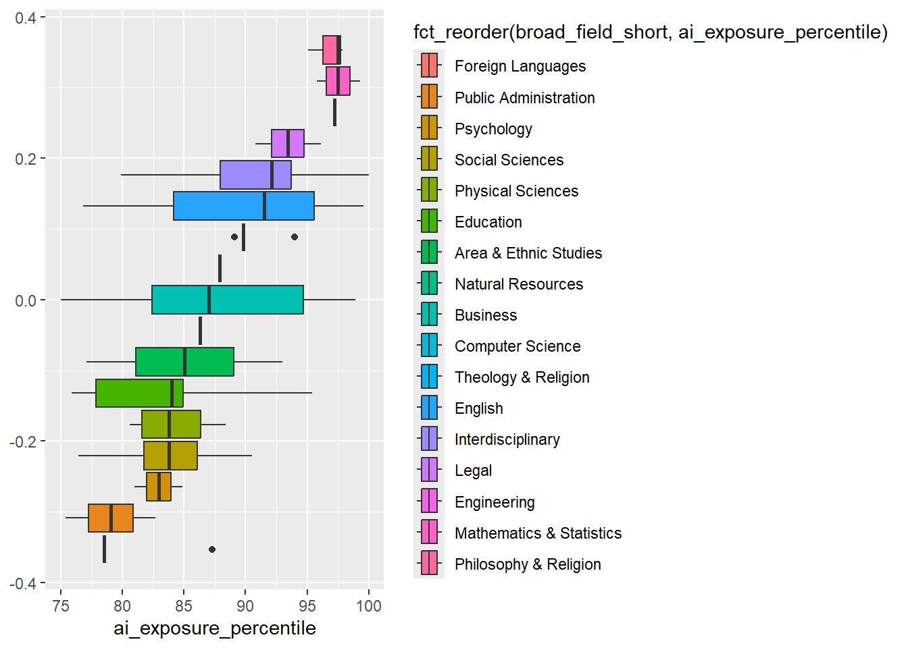
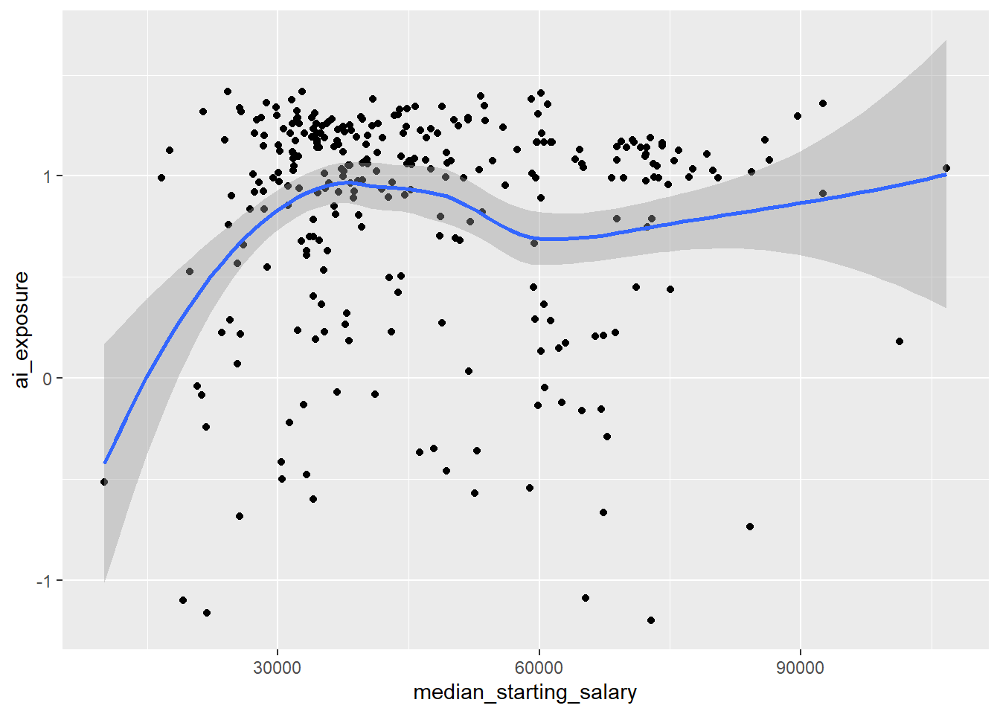
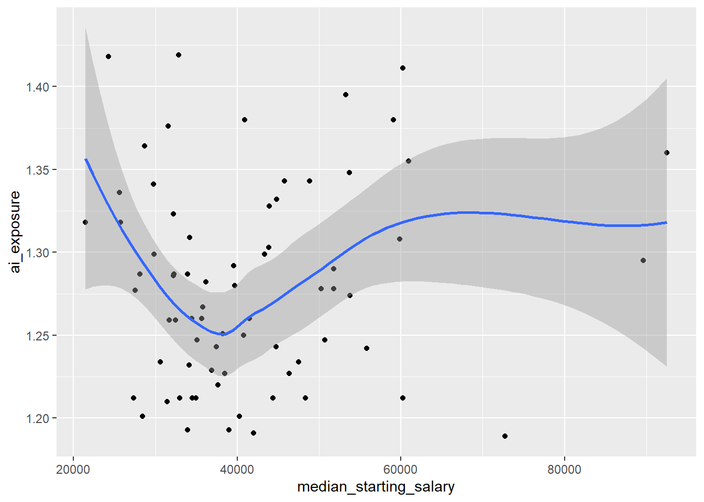
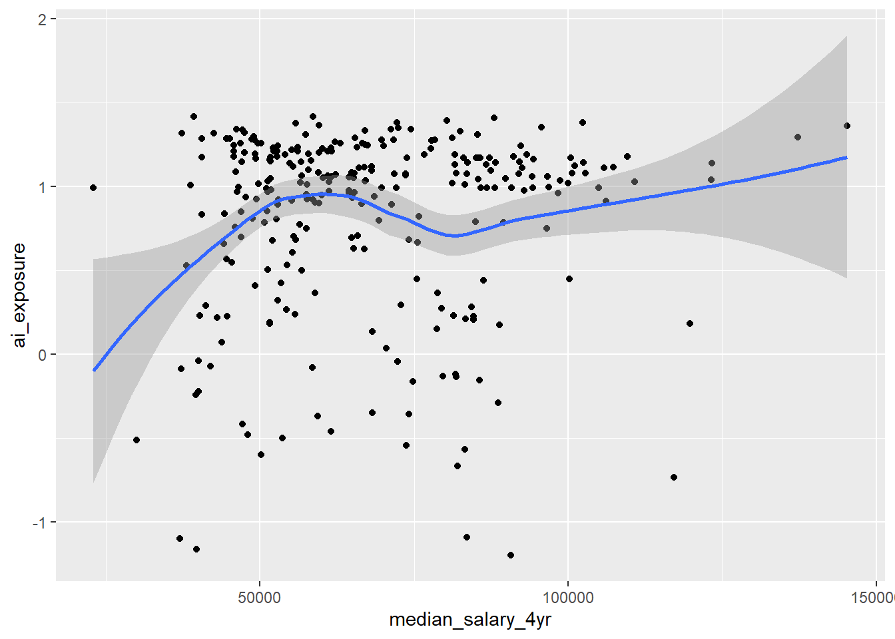
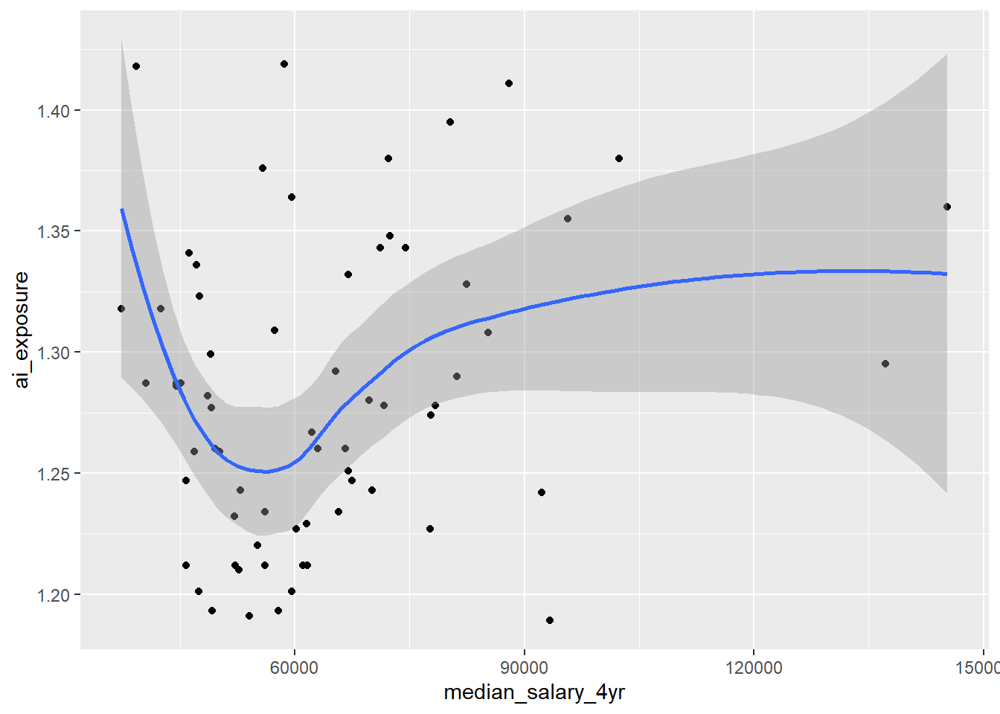
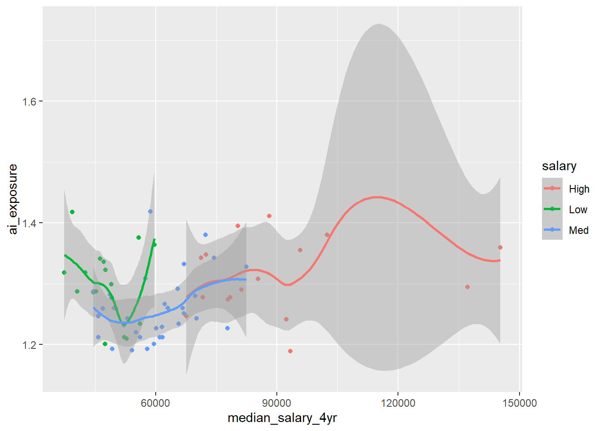
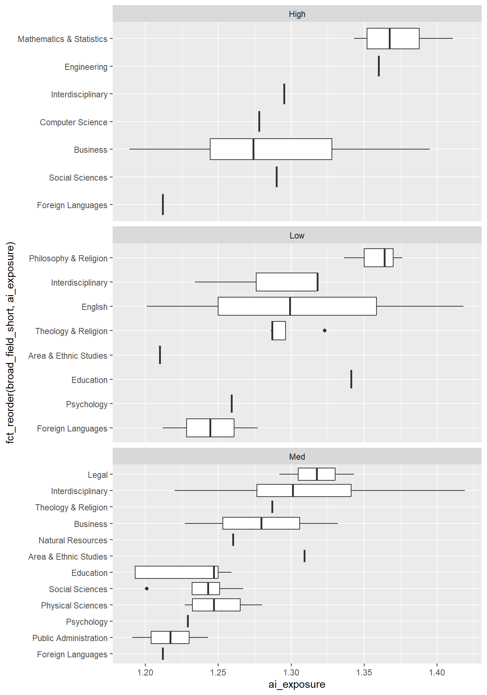
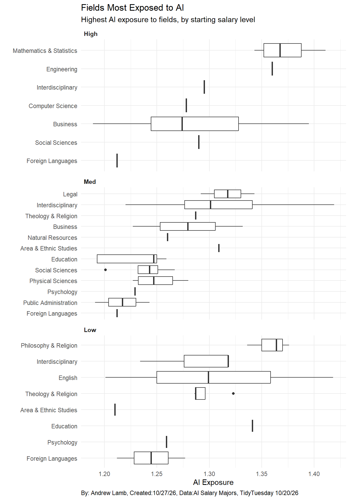
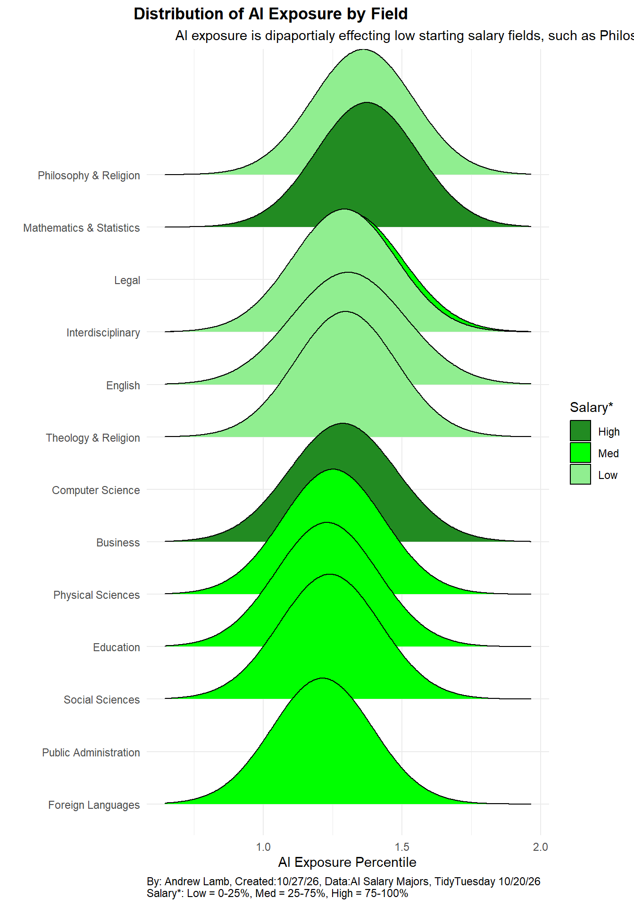

Homework 05
TidyTuesday Part (Optional)
You can count work on this week’s TidyTuesday toward the exceptional work.
Explore the week’s TidyTuesday challenge. Develop a research question, then answer it through a short data story mainly composed of effective visualizations. Provide sufficient background for readers to grasp your narrative. Refer to the Homework Instructions ⭐ page on the course website for details on how to submit this part.
Getting the Data
Exploring the Data
# A tibble: 6 × 13
cip4 field_of_study broad_field broad_field_short median_starting_salary
<chr> <chr> <chr> <chr> <dbl>
1 4604 Building/Construct… Constructi… Construction Tra… 72864
2 5003 Dance Visual and… Visual & Perform… 21878
3 4807 Woodworking Precision … Precision Produc… 19151
4 4703 Heavy/Industrial E… Mechanic a… Mechanic & Repai… 65331
5 4903 Marine Transportat… Transporta… Transportation 84187
6 4701 Electrical/Electro… Mechanic a… Mechanic & Repai… 25583
# ℹ 8 more variables: median_salary_4yr <dbl>, ai_exposure <dbl>,
# ai_exposure_percentile <dbl>, ai_exposure_language <dbl>,
# ai_exposure_image <dbl>, n_occupations <dbl>, n_institutions <dbl>,
# n_graduates <dbl>spc_tbl_ [285 × 13] (S3: spec_tbl_df/tbl_df/tbl/data.frame)
$ cip4 : chr [1:285] "4604" "5003" "4807" "4703" ...
$ field_of_study : chr [1:285] "Building/Construction Finishing, Management, and Inspection" "Dance" "Woodworking" "Heavy/Industrial Equipment Maintenance Technologies/Technicians" ...
$ broad_field : chr [1:285] "Construction Trades" "Visual and Performing Arts" "Precision Production" "Mechanic and Repair Technologies/Technicians" ...
$ broad_field_short : chr [1:285] "Construction Trades" "Visual & Performing Arts" "Precision Production" "Mechanic & Repair Tech" ...
$ median_starting_salary: num [1:285] 72864 21878 19151 65331 84187 ...
$ median_salary_4yr : num [1:285] 90691 39716 37055 83528 117176 ...
$ ai_exposure : num [1:285] -1.201 -1.162 -1.101 -1.091 -0.736 ...
$ ai_exposure_percentile: num [1:285] 0 0.4 0.7 1.1 1.4 1.8 2.1 2.5 2.8 3.2 ...
$ ai_exposure_language : num [1:285] -1.133 -0.557 -1.174 -1.129 -0.905 ...
$ ai_exposure_image : num [1:285] -0.984 -1.796 -0.75 -0.746 -0.139 ...
$ n_occupations : num [1:285] 21 3 6 9 4 12 18 3 1 6 ...
$ n_institutions : num [1:285] 4 62 1 1 7 1 4 49 3 10 ...
$ n_graduates : num [1:285] 206 1798 24 25 632 ...
- attr(*, "spec")=
.. cols(
.. cip4 = col_character(),
.. field_of_study = col_character(),
.. broad_field = col_character(),
.. broad_field_short = col_character(),
.. median_starting_salary = col_double(),
.. median_salary_4yr = col_double(),
.. ai_exposure = col_double(),
.. ai_exposure_percentile = col_double(),
.. ai_exposure_language = col_double(),
.. ai_exposure_image = col_double(),
.. n_occupations = col_double(),
.. n_institutions = col_double(),
.. n_graduates = col_double()
.. )
- attr(*, "problems")=<externalptr> # A tibble: 6 × 7
cip4 field_of_study soc occupation ai_exposure ai_exposure_language
<chr> <chr> <chr> <chr> <dbl> <dbl>
1 0100 Agriculture, General 19-1… Animal Sc… 1.04 0.972
2 0100 Agriculture, General 19-1… Food Scie… 0.794 0.573
3 0100 Agriculture, General 25-1… Agricultu… 0.755 1.15
4 0100 Agriculture, General 19-1… Soil and … 0.632 0.609
5 0101 Agricultural Economics 19-3… Economists 1.40 1.33
6 0101 Agricultural Economics 25-1… Economics… 1.32 1.46
# ℹ 1 more variable: ai_exposure_image <dbl>spc_tbl_ [1,505 × 7] (S3: spec_tbl_df/tbl_df/tbl/data.frame)
$ cip4 : chr [1:1505] "0100" "0100" "0100" "0100" ...
$ field_of_study : chr [1:1505] "Agriculture, General" "Agriculture, General" "Agriculture, General" "Agriculture, General" ...
$ soc : chr [1:1505] "19-1011" "19-1012" "25-1041" "19-1013" ...
$ occupation : chr [1:1505] "Animal Scientists" "Food Scientists and Technologists" "Agricultural Sciences Teachers, Postsecondary" "Soil and Plant Scientists" ...
$ ai_exposure : num [1:1505] 1.041 0.794 0.755 0.632 1.404 ...
$ ai_exposure_language: num [1:1505] 0.972 0.573 1.154 0.609 1.33 ...
$ ai_exposure_image : num [1:1505] 1.12 1.129 -0.29 0.804 1.299 ...
- attr(*, "spec")=
.. cols(
.. cip4 = col_character(),
.. field_of_study = col_character(),
.. soc = col_character(),
.. occupation = col_character(),
.. ai_exposure = col_double(),
.. ai_exposure_language = col_double(),
.. ai_exposure_image = col_double()
.. )
- attr(*, "problems")=<externalptr> Code

Interesting, here are the feilds that are in the 75th percentile and up, ai seems to impact a wide range of feilds from english to competer science.
Code
# We have to first make a var that shows if the cafe is rural, suburban, urban
q1 <- quantile(Q4_percentile_ai_salary$median_starting_salary, 0.25, na.rm = T)
q3 <- quantile(Q4_percentile_ai_salary$median_starting_salary, 0.75, na.rm = T)
new_Q4_percentile_ai_salary <- Q4_percentile_ai_salary |>
mutate(starting_salary_Low = (median_starting_salary < q1),
starting_salary_Med = ((q1 <= median_starting_salary) & (median_starting_salary <= q3)),
starting_salary_High = (median_starting_salary > q3)) |>
pivot_longer(cols = c(starting_salary_Low, starting_salary_Med, starting_salary_High), names_to = "salary", names_prefix = "starting_salary_", values_to = "yes_no") |>
filter(yes_no == T)
dim(Q4_percentile_ai_salary) [1] 72 14# A tibble: 72 × 16
cip4 field_of_study broad_field broad_field_short median_starting_salary
<chr> <chr> <chr> <chr> <dbl>
1 5220 Construction Mana… Business, … Business 72746
2 4402 Community Organiz… Public Adm… Public Administr… 41991
3 1301 Education, General Education Education 38982
4 1309 Social and Philos… Education Education 33915
5 4512 Urban Studies/Aff… Social Sci… Social Sciences 40294
6 2313 Rhetoric and Comp… English La… English 28418
7 0502 Ethnic, Cultural … Area, Ethn… Area & Ethnic St… 31459
8 1603 East Asian Langua… Foreign La… Foreign Languages 27331
9 1604 Slavic, Baltic an… Foreign La… Foreign Languages 60240
10 1605 Germanic Language… Foreign La… Foreign Languages 44390
# ℹ 62 more rows
# ℹ 11 more variables: median_salary_4yr <dbl>, ai_exposure <dbl>,
# ai_exposure_percentile <dbl>, ai_exposure_language <dbl>,
# ai_exposure_image <dbl>, n_occupations <dbl>, n_institutions <dbl>,
# n_graduates <dbl>, amount <int>, salary <chr>, yes_no <lgl>Now we have three levels of salary: high, med, low
Is there a difference in the relationship between median starting salary years and ai exposure? ## Data Viz
Code

Code

It seems as though there isn’t a large corralation between salary and ai exposure, ai is
Is there a difference in the relationship between median salary after 4 years and ai exposure?
Code

Code

Code

Code

Code
# Attempt 1
new_Q4_percentile_ai_salary |>
ggplot(aes(x = ai_exposure, y=fct_reorder(broad_field_short, ai_exposure))) +
geom_boxplot()+
facet_wrap(~fct_relevel(salary, c("High", "Med", "Low")), ncol = 1, scales = "free_y") +
labs(title = "Fields Most Exposed to AI", subtitle = "Highest AI exposure to fields, by starting salary level", y="", x="AI Exposure", caption = "By: Andrew Lamb, Created:10/27/26, Data:AI Salary Majors, TidyTuesday 10/20/26")+
theme_minimal()+
theme(strip.text = element_text(hjust = 0, face = "bold"), plot.caption = element_text(hjust = 0))
Code
# Attempt 2
library(ggridges)
library(janitor)
new_Q4_percentile_ai_salary |>
get_dupes(broad_field_short, salary) |>
ggplot(aes(x = ai_exposure, y=fct_reorder(broad_field_short, ai_exposure_percentile), fill = fct_relevel(salary, c("High", "Med", "Low")))) +
geom_density_ridges()+
scale_fill_manual(values = c("forestgreen", "green", "lightgreen"))+
labs(title = "Distribution of AI Exposure by Field", subtitle = "AI exposure is dipaportialy effecting low starting salary fields, such as Philosophy, English, Religion", y="", x="AI Exposure Percentile", caption = "By: Andrew Lamb, Created:10/27/26, Data:AI Salary Majors, TidyTuesday 10/20/26
Salary*: Low = 0-25%, Med = 25-75%, High = 75-100%", fill = "Salary*")+
theme_minimal()+
theme(plot.caption = element_text(hjust = 0), plot.title = element_text(hjust = -0.1, face = "bold"), plot.subtitle = element_text(hjust = -0.145))
The graph shows the feilds that have a med starting income have more fields effected then the low and high salary starting pay jobs. This may be due to the fact that most jobs will fall in the middle of the distabution. This is still interesting to consider. Especially since historicaly big leaps in technonlgy disporpotialy effect work class people.
Conclusion
It seems that AI is effecting almost all fields no matter what you major in college, but the effects might not be equal.